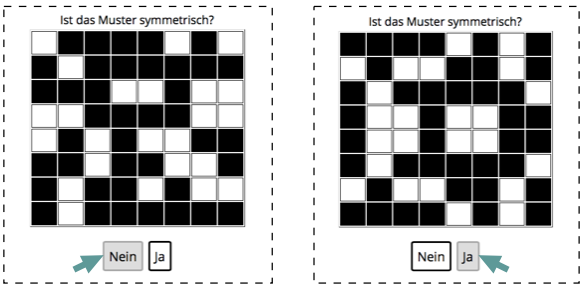

<html>
	<head>
		<title>SymmetrySpan</title>
		<script src="https://ajax.googleapis.com/ajax/libs/jquery/1.11.1/jquery.min.js"></script>
		<script src="jspsych-5.0.3-sym/jspsych.js"></script>

		<script src="jspsych-5.0.3-sym/plugins/jspsych-text.js"></script>
		
		<script src="jspsych-5.0.3-sym/plugins/jspsych-button-response-judgeSym.js"></script>
		<script src="jspsych-5.0.3-sym/plugins/jspsych-button-response-hitCells.js"></script>
		<script src="jspsych-5.0.3-sym/plugins/jspsych-instructions.js"></script>
		
		<script src="jspsych-5.0.3-sym/plugins/equations.js"></script>
		<script src="jspsych-5.0.3-sym/plugins/jspsych-survey-text_persCode.js"></script>
		<script src="jspsych-5.0.3-sym/plugins/jspsych-survey-multi-choice.js"></script>
		<script src="jspsych-5.0.3-sym/plugins/jspsych-single-stim.js"></script>
		
		<script src="jspsych-5.0.3-sym/plugins/matrices.js"></script>
		<script src="jspsych-5.0.3-sym/plugins/jspsych-rememberCells.js"></script>
		<script src="jspsych-5.0.3-sym/plugins/jspsych-rememberCells-practice.js"></script>
		<link href="jspsych-5.0.3-sym/css/jspsych_symSpan.css" rel="stylesheet" type="text/css"></link>
		
		<style>
			:root{
				--normalTextSize: 20px;
				--cellSize_symMat: 40px;
				--cellSize_remMat: 60px;
				--numberSize_remMat: 40px;
				
			}
		</style>

	</head>
	
	
	<script>
		function rememberCellsFx (t_SetSize) {
			
			var cells_trial_x = [];
			var alreadySampled = [];
			for(i=0;i<t_SetSize;i++){
				var sample_i = Math.floor(Math.random()*16);
				if(alreadySampled.includes(sample_i)===false){
					cells_trial_x.push(sample_i);
					alreadySampled.push(sample_i);
				};
			};
			
			return cells_trial_x
		};

		function successCountrFx (successCountr_sym,pattern,b_pressed){
			if(pattern=="symmetrical"&b_pressed==1){successCountr_sym+=1}
			if(pattern=="asymmetrical"&b_pressed==0){successCountr_sym+=1}
			return(successCountr_sym)
		}

		function symFeedback (nErrorFreeTrials_symPractice,successCountr_sym,pattern,b_pressed){
			

			if(pattern=="symmetrical"){
					if(b_pressed==1){
						
						nTrials_remaining = nErrorFreeTrials_symPractice-successCountr_sym-1;
						if(nTrials_remaining==0){ feedText = "Richtig. Das pr&#xE4;sentierte Muster war symmetrisch."+"<p>"+"Der &#xDC;bungsdurchgang ist beendet!"+"<p>"+"Klicken Sie Weiter, um fortzufahren."}else{feedText = "Richtig. Das pr&#xE4;sentierte Muster war symmetrisch."+"<p>"+nTrials_remaining+" von "+(nErrorFreeTrials_symPractice-1)+" verbleibenden fehlerfreien Versuchen."}	
					}else{
						nTrials_remaining = nErrorFreeTrials_symPractice-successCountr_sym-1;
						feedText = "Falsch. Das pr&#xE4;sentierte Muster war symmetrisch."+"<p>"+nTrials_remaining+" von "+(nErrorFreeTrials_symPractice-1)+" verbleibenden fehlerfreien Versuchen."}
				}
				if(pattern=="asymmetrical"){
					if(b_pressed==0){
						
						nTrials_remaining = nErrorFreeTrials_symPractice-successCountr_sym-1;
						if(nTrials_remaining==0){feedText = "Richtig. Das gezeigte Muster war asymmetrisch."+"<p>"+"Vielen Dank! Der &#xDC;bungsdurchgang (a) ist nun zu Ende."+"<p>"+" Klicken Sie <i>Weiter</i>, um nun mit der &#xDC;bung (b) zu beginnen."}else{feedText = "Richtig. Das gezeigte Muster war asymmetrisch."+"<p>"+nTrials_remaining+" von "+(nErrorFreeTrials_symPractice-1)+" verbleibenden fehlerfreien Durchg&#xE4;ngen."}
					}else{
						nTrials_remaining = nErrorFreeTrials_symPractice-successCountr_sym-1;
						feedText = "Falsch. Das gezeigte Muster war asymmetrisch."+"<p>"+nTrials_remaining+" von of "+(nErrorFreeTrials_symPractice-1)+" verbleibenden fehlerfreien Versuchen."}
				}

				return feedText
		}

	</script>

	<script>
		function add(a, b) {
    		return a + b;
		}
	</script>
	
	<script>
	var trials = [2,2,2,3,3,3,4,4,4,5,5,5,6,6,6]
	//var trials = [2,2];
	var trials_seq = jsPsych.randomization.repeat(trials, 1);
	var maxSetSize = 6;
	var nTrials = trials_seq.length;
	var nPerSetSize = 3;
	
	var rangePracticeSetSize = {min:3,max:3};
	var practiceCriterion = 1;

	var nErrorFreeTrials_symPractice = 3;
	

	
///////// Intro
/////////
	var welcome = {
			type: 'instructions',
			pages: [
			//<p>Aus unserem allt&#xE4;glichen Leben ist uns wahrscheinlich allen bekannt, dass es schwierig sein kann mehrere Aufgaben gleichzeitig, zu absolvieren. 
					"<p class='center-content'> <h2> Willkommen zum <b style='color:#008080'>SymSpan</b>-Task!</h2><p> Der <b style='color:#008080'>SymSpan</b>-Task stellt Ihre Multitasking-F&#xE4;higkeiten auf die Probe, indem er eine Situation simuliert, in der zwei Aufgaben parallel zu bew&#xe4;ltigen sind: <p>(a) In der Symmetrie-Aufgabe muss entschieden werden, ob ein gezeigtes Muster (bestehend aus schwarzen und wei&#xDF;en Quadraten) symmetrisch entlang seiner Horizontalen ist oder nicht. <br>(b) In der Ged&#xE4;chtnisaufgabe gilt es, sich die Positionen von farbig aufleuchtenden Feldern innerhalb einer 4x4-Matrix zu merken. <p>Der gesamte Task (inklusive &#xDC;bungsdurchgang) dauert 12-15 Minuten.<p>Klicken Sie <i>Weiter</i>, um fortzusetzen und zun&#xE4;chst Ihre Einwilligungserkl&#xE4;rung zur Teilnahme abzugeben.<h3> Bitte vergewissern Sie sich, dass sie <span style='color:#008080'>Symspan</span> entweder mit dem Browser <i>Firefox</i> oder <i>Chrome</i> durchf&#xFC;ren. Bitte verwenden Sie weder den Browser <i>Safari</i> noch <i>Windows Internet Explorer</i>!</h3>"],
			show_clickable_nav: true
			};

    var informedConsent1 = {
		type: 'survey-multi-choice',
		questions: ["<b>Einverst&#xE4;ndniserkl&#xE4;rung </b>1/3"],
		options: [["Ich habe die Aufgabenbeschreibung gelesen und erkl&aumlre mich bereit zur Teilnahme."]],
		required: [true]
    };
	var informedConsent2 = {
		type: 'survey-multi-choice',
		questions: ["<b>Einverst&#xE4;ndniserkl&#xE4;rung </b>2/3"],
		options: [["Ich stimme zu, dass meine pseudonymisierten Daten zur Ver&oumlffentlichung wissenschaftlicher Arbeiten verwendet werden."]],
		required: [true]
    };
    var informedConsent3 = {
		type: 'survey-multi-choice',
		questions: ["<b>Einverst&#xE4;ndniserkl&#xE4;rung </b>3/3"],
		options: function(){return([["Ich stimme zu, dass meine pseudonymisierten Daten zum Zweck der wissenschaftlichen Transparenz f&uumlr andere WissenschaftlerInnen im <a href='https://osf.io/'> Open Science Framework </a> verf&uumlgbar gemacht werden."]])},
		required: [true]
    };

	var persData_code = ["<p> Generieren Sie Ihren anonymisierten Personencode:"];
	var demographics = {
	  		type: "survey-text-persCode",
	  		questions: persData_code,
			preamble: "<b>Anleitung zum Generieren des Codes</b>: <br> 1.Stelle: Erster Buchstabe des Vornamens Ihrer Mutter (z.B. <b>M</b>artha) <br> 2.Stelle: Erster Buchstabe des Vornamens Ihres Vaters (z.B. <b>S</b>igmund) <br> Stellen 3-4: Ihr Geburtsjahr (z.B. 18<b>95</b>)<br> 5.Stelle: Erster Buchstabe Ihrer aktuellen Wohnadresse (z.B. <b>B</b>erggasse) <br> 6.Stelle: Erste Ziffer Ihrer Hausnummer (z.B. <b>1</b>9) <p> Beispiel vollst&#xE4;ndiger Code: <b>MS95B1</b>",
			on_finish: function(data) { 
		 		code_length = data.code_length;
		 		if(code_length!=6){alert("Bitte geben Sie einen 6-stelligen Personencode ein.")}
		 		console.log(code_length)
		 	}
	};
	var persCode_loop = {
		timeline: [demographics],
		loop_function: function(data){
				if(code_length!=6){
		            return true;
		        } else {
		            return false;
		        }
		  },

	};
///////// Practice
	var practice_overview = {
		type: 'instructions',
		pages: ["<p>***</p> Es folgen zun&#xE4;chst drei kurze &#xDC;bungseinheiten, welche den SymSpan-Task Schritt f&#xFC;r Schritt erkl&#xE4;ren:<p><b>(a)</b> Symmetrie-Aufgabe<br><b>(b)</b> Ged&#xE4;chtnisaufgabe<br><b>(ab)</b> Beide Aufgaben zugleich (SymSpan-Task) <p>***</p>Klicken Sie <i>Weiter</i>, um mit der ersten &#xDC;bungseinheit zu beginnen."],
		show_clickable_nav: true,
	};
///////// Practice Symmetry
	
	var intro_symmetry_practice = {
			type: 'instructions',
			pages: function(){return ["<p class='center-content'><b>Symmetrie-Aufgabe: Instruktion</b></p> Nachfolgend werden Ihnen Muster (Matrizen) pr&#xE4;sentiert, die sich aus schwarzen und wei&#xDF;en Quadraten zusammensetzen. Es gilt jeweils zu entscheiden, ob das Muster der Matrix symmetrisch entlang seiner Horizontalen ist oder nicht (siehe untere Abbildung).</p></p></IMG></p> <p class='center-content'> Klicken Sie <i>Weiter</i>, um zu beginnen.</p><p>"]},
			show_clickable_nav: true,
			on_finish: function(data) { 
				successCountr_sym = 0;
			},
	};

	var symmetry_buttons = [ ["Nein"] , ["Ja"] ];
	var symmetry = {
		    type: 'judgeSym',
			is_html: true, 
			prompt: "Ist das Muster symmetrisch?",
		    choices: symmetry_buttons,
	 	   	on_finish: function(data){
	 	   		pattern = data.matrixPattern
				b_pressed = data.button_pressed
				successCountr_sym = successCountrFx(successCountr_sym, pattern, b_pressed)
				console.log(successCountr_sym);
	 	   	},
		};

	var feedback_symmetry_0 = {
		type: 'text',
		text: function(){return symFeedback (nErrorFreeTrials_symPractice,successCountr_sym,pattern,b_pressed) },
		on_finish: function(data) { 
						
		}
	};

	var symmetry_loop_practice = {
		timeline: [symmetry,feedback_symmetry_0],
		loop_function: function(data){
		        
				if(successCountr_sym == (nErrorFreeTrials_symPractice-1)){
		            return false;
		        } else {
		            return true;
		        }
		  },
	};

///////// Practice Remember
	var intro_remember_practice = {
			type: 'instructions',
			pages: function(){return ["<p class='center-content'><b>Ged&#xE4;chtnisaufgabe: Instruktion</b></p> Wenn Sie auf <i>Weiter</i> klicken, erscheint eine 4x4-Matrix, innerhalb derer einzelne Felder hintereinander farbig aufleuchten werden. Anschlie&#xDF;end gilt es, alle zuvor aufgeleuchteten Felder in der dargebotenen Reihenfolge zu erinnern (durch Klicken der Felder der Matrix).</p></p><p class='center-content'> Klicken Sie <i>Weiter</i>, um den &#xDC;bungsdurchgang zu starten.</p><p>"]},
			show_clickable_nav: true,
			on_finish: function(data) { 
				t_SetSize = getRndInteger(rangePracticeSetSize.min,rangePracticeSetSize.max)
				remememberCells_trial_x = rememberCellsFx(t_SetSize);
				successCountr = 0;
			},
	};
	var plusSign = {
  	  	type: "single-stim",
		stimulus: "<p><p><b>+",
  	  	choices: [100], timing_response: 1200, data: {phase: 'remember'},
  	  	is_html: true
	};

	var remember = {
  	  	//type: "single-stim",
  	  	type: "rememberCells-practice",
  	  	flashingCells: function(){return(remememberCells_trial_x)},
		//stimulus: function(){var mat = matRememberFx(remememberCells_trial_x[rem_i]); return(mat)},
  	  	choices: [100], timing_response: function(){return(1000*(t_SetSize))}, data: {phase: 'remember'},
  	  	is_html: true,
 	   	on_finish: function(data){
 		   	 	   	},
		
	};

	var recall = {
  		type: 'button-response-hitCells',
  		is_html: true,
		stimulus: "Klicken Sie die Felder in der pr&#xE4;sentierten Reihenfolge an!",
		showEndButton: true,
		flashedCells: function(){return remememberCells_trial_x},
		response_ends_trial: false,
		on_finish: function(data) { 
			cells_presented = data.flashed_cells
			cells_clicked = data.clicked_cells
			
			cells_RecCorPos = data.Cells_RecCorPos
        	cells_RecIncorPos = data.Cells_RecIncorPos
        	cells_Missed = data.Cells_missed
        	cells_FalseMem = data.Cells_FalseMem

        	accuracy_score_rem = cells_RecCorPos.length/(cells_RecCorPos.length+cells_RecIncorPos.length+cells_Missed.length+cells_FalseMem.length);
        	accuracy_score_rem = Math.floor(accuracy_score_rem*100)
        	
		},	
	};


	var feedback_recall_0 = {
		type: 'instructions',
		pages: [ function(){return matFeedbackFx(cells_presented, cells_clicked, cells_RecCorPos, cells_RecIncorPos, cells_Missed, cells_FalseMem, accuracy_score_rem) } ],
		show_clickable_nav: true,
		on_finish: function(data) { 
			if(accuracy_score_rem==100){
				feedback_recall_message = "Sehr gut! Der &#xDC;bungsdurchgang ist zu Ende.";
				successCountr+=1;
			}else{
				feedback_recall_message = "Um den &#xDC;bungsdurchgang zu beenden, m&#xFC;ssen die aufleuchtenden Felder fehlerfrei erinnert werden.";
				remememberCells_trial_x = rememberCellsFx(t_SetSize);
			}
		}
	};

	var feedback_recall_1 = {
		type: 'instructions',
		pages: [ function(){return ""+feedback_recall_message+"" } ],
		show_clickable_nav: true,
		on_finish: function(data) { 
			
		},
	};

	var recall_loop_practice = {
		timeline: [remember,recall,feedback_recall_0,feedback_recall_1],
		loop_function: function(data){
		        
				if(successCountr == 0){
		            return true;
		        } else {
		            return false;
		        }
		  },
	};
   
///////// Practice Symmetry & Remember
	var intro_RemAndSym_practice = {
			type: 'instructions',
			pages: function(){return ["<p class='center-content'><b>Beide Aufgaben zugleich (SymSpan-Task): Instruktion</b></p> Jetzt sind ihre Multi-Tasking F&#xE4;higkeiten gefragt! <p>Die Aufgabe besteht nun darin abwechselnd eine Symmetrie-Aufgabe und eine Ged&#xE4;chtnisaufgabe zu absolvieren d.h.:<br>(a) zu entscheiden, ob das gezeigte Muster symmetrisch entlang seiner horizontalen ist oder nicht und <br>(b) sich die Reihenfolge der farbig aufleuchtenden Felder zu merken. <p class='center-content'> Klicken Sie <i>Weiter</i>, um die &#xDC;bung zu beginnen.</p><p>"]},
			show_clickable_nav: true,
			on_finish: function(data) { 
				successCountr_sym = 0
				successCountr_rem = 0
				t_SetSize = getRndInteger(rangePracticeSetSize.min,rangePracticeSetSize.max)
				remememberCells_trial_x = rememberCellsFx(t_SetSize);
				rem_i = 0
				symDecisions = []
				symPatterns = []
				
			},
	};

	var rem_RemAndSym = {
  	  	type: "single-stim",
  	  	stimulus: function(){
  	  		var mat = matRememberFx(remememberCells_trial_x[rem_i]);return(mat)},
  	  	choices: [100], 
  	  	timing_response: function(){return(500*(t_SetSize))}, data: {phase: 'remember'},
  	  	is_html: true,
 	   	on_finish: function(data){
 	   		rem_i+=1
 		},
		
	};
	var sym_RemAndSym = {
		    type: 'judgeSym',
			is_html: true, 
			prompt: "Ist das Muster symmetrisch?",
		    choices: symmetry_buttons,
	 	   	on_finish: function(data){
	 	   		pattern = data.matrixPattern
				b_pressed = data.button_pressed
				response = ["asymmetrical","symmetrical"][b_pressed]
				if(pattern==response){successCountr_sym+=1}
				symDecisions.push(response)
				symPatterns.push(pattern)
				
	 	   	},
		};

	var RemAndSym_loop = {
		timeline: [sym_RemAndSym,rem_RemAndSym],
		loop_function: function(data){
		        
				if(rem_i==remememberCells_trial_x.length){
		            return false;
		        } else {
		            return true;
		        }
		  },
	};

	var feedback_RemAndSym_0 = {
		type: 'instructions',
		pages: [ function(){return matFeedbackFx(cells_presented, cells_clicked, cells_RecCorPos, cells_RecIncorPos, cells_Missed, cells_FalseMem, accuracy_score_rem) } ],
		show_clickable_nav: true,
		on_finish: function(data) { 
			accuracy_score_sym = Math.floor((successCountr_sym/symDecisions.length)*100)
			if(accuracy_score_rem==100&accuracy_score_sym==100){
				feedback_recall_message = "Sehr gut! Der &#xDC;bungsdurchgang ist nun beendet."
			}else{
				feedback_recall_message = "Um den &#xDC;bungsdurchgang zu beenden, m&#xFC;ssen die aufleuchtenden Felder fehlerfrei erinnert werden.";
			}
		}
	};

	var feedback_RemAndSym_1 = {
		type: 'instructions',
		pages: [ function(){return ""+"<b>"+"Feedback Symmetrie-Aufgabe"+"</b>"+"<p>"+"Die pr&#xE4;sentierten Muster waren: "+symPatterns+"<br>"+"Ihre Antworten waren: "+symDecisions+"<p>"+"<b>"+"Genauigkeit: "+accuracy_score_sym+"%" } ],
		show_clickable_nav: true,
		on_finish: function(data) { 
				
			}
		
	};

	var feedback_RemAndSym_2 = {
		type: 'instructions',
		pages: [ function(){return feedback_recall_message } ],
		show_clickable_nav: true,
		on_finish: function(data) { 
				t_SetSize = getRndInteger(rangePracticeSetSize.min,rangePracticeSetSize.max)
				remememberCells_trial_x = rememberCellsFx(t_SetSize);
				rem_i = 0
				successCountr_rem = 0
				successCountr_sym = 0
				symDecisions = []
				symPatterns = []
			}
		
	};

	var RemAndSym_loop2 = {
		timeline: [RemAndSym_loop,recall,feedback_RemAndSym_0,feedback_RemAndSym_1,feedback_RemAndSym_2],
		loop_function: function(data){
		        
				if(accuracy_score_rem==100&accuracy_score_sym==100){
		            return false;
		        } else {
		            return true;
		        }
		  },
	}

	
	var goodbye = {
			type: 'instructions',
			pages: [function(){return("<h3>Vielen Dank f&#xFC;r Ihre Teilnahme!</h3> Klicken Sie <i>Weiter</i>, um den Download Ihrer Daten in Ihren Download-Folder zu starten. Senden Sie dieses File anschlie&#xDF;end an die E-Mail Adresse: <a href='mailto:seasenselab@gmail.com'>seasenselab@gmail.com</a>  <p>Hinweis: Wenn Sie irrt&#xFC;mlich mit Safari gearbeitet haben, dann <ul><li>markieren und kopieren Sie die nachfolgend angezeigten Daten mit den Befehlen cmd+a und cmd+s. F&#xFC;gen Sie anschlie&#xDF;end diese kopierten Daten in ein Textfile Ihrer Wahl, welches wir Sie bitten, ebenfalls an die Adresse <a href='mailto:seasenselab@gmail.com'>seasenselab@gmail.com</a> zu schicken.</li><li>teilen Sie uns in jedem Fall bitte mit, dass Sie teilgenommen haben. </li></ul>")}],
			show_clickable_nav: true,	
	};

///////// Official Task
var intro_realTrials = {
			type: 'instructions',
			pages: function(){return ["<p>***</p><b> SymSpan-Task:</b> Instruktion <p> Es folgen nun "+trials.length+" Durchg&#xE4;nge, in denen wie zuletzt beide Aufgaben simultan auszuf&#xFC;hren sind. <p>Bitte beachten Sie, dass einzelne Durchg&#xE4;nge sehr herausfordernd sind, da gelegentlich bis zu "+maxSetSize+" Felder der 4x4-Matrix zu merken sind. <p>Ihr Ergebnis (in Punkten) erfahren Sie erst nach dem letzten Durchgang.</p><p><b>Versuchen Sie, so genau wie m&#xF6;glich zu arbeiten.</b><p>***</p><p>Klicken Sie  <i>Weiter</i>, um zu beginnen."]},
			show_clickable_nav: true,
			on_finish: function(data) {
				x = 0
				t_SetSize = trials_seq[x]
				//t_SetSize=1
				remememberCells_trial_x = rememberCellsFx(t_SetSize);
				rem_i = 0
				cells_RecCorPos_total = 0
				cells_RecIncorPos_total = 0
				cells_Missed_total = 0
				cells_FalseMem_total = 0
				nCells_total = 0

				successCountr_sym = 0
				sym_trials_total = 0
				symDecisions = []
				symPatterns = []
			},
	};
	var feedback_progress = {
		type: 'instructions',
		pages: function(){if((x+1)<trials.length){return ["<p>***</p><p>Sie haben bisher <b>"+(x+1)+"</b> von <b>"+trials.length+"</b> Durchg&#xE4;ngen absolviert. </p>Klicken Sie <i>Weiter</i>, um fortzufahren."]}else{return["<p>***</p><b> </b><br><b></b>Vielen Dank! Der SymSpan-Task ist nun zu Ende.<p>***</p><b>Punktestand</b><p></p><b>Symmetrie-Aufgabe:</b><p>Anzahl dargebotener Muster: <b>"+(sym_trials_total+symDecisions.length)+"</b><br>Richtige Antworten: <b>"+successCountr_sym+"</b><br>Genauigkeit: <b>"+ Math.round((successCountr_sym/(sym_trials_total+symDecisions.length))*10000)/100+"%</b><p>***</p> <p> <b>Ged&#xE4;chtnisaufgabe:</b><p>Anzahl zu merkender Felder: <b>"+(nCells_total+t_SetSize)+"</b><br>Anzahl richtig erinnert: <b>"+(cells_RecCorPos_total+cells_RecCorPos.length)+"</b><br>Genauigkeit: <b>"+Math.round((cells_RecCorPos_total+cells_RecCorPos.length)/(nCells_total+t_SetSize)*10000)/100+"%</b><p>***</p>Klicken Sie <i>Weiter</i>, um fortzufahren."]}},
		show_clickable_nav: true,
		data: function(){},
		on_finish: function(data) {
			// for final feedback
			x += 1 
			rem_i = 0
			t_SetSize = trials_seq[x]
			//t_SetSize=1
			remememberCells_trial_x = rememberCellsFx(t_SetSize);
			cells_RecCorPos_total = cells_RecCorPos_total+cells_RecCorPos.length
			cells_RecIncorPos_total = cells_RecIncorPos_total+cells_RecIncorPos.length
			cells_Missed_total = cells_Missed_total+cells_Missed.length
			cells_FalseMem_total = cells_FalseMem_total+cells_FalseMem.length
			
			nCells_total = nCells_total+t_SetSize
			current_accuracy_rem = cells_RecCorPos_total/nCells_total

			sym_trials_total = sym_trials_total+symDecisions.length
			symDecisions = []
			symPatterns = []
			current_accuracy_sym = successCountr_sym/sym_trials_total

			console.log(current_accuracy_rem)
			console.log(current_accuracy_sym)
		},
	}
	var Symspan_loop = {
		timeline: [RemAndSym_loop,recall,feedback_progress],
		loop_function: function(data){
				if(x<trials.length){
		            return true;
		        } else {
		            return false;
		        }
		  },
	};

/////////
	jsPsych.init({
		
		timeline: [welcome, informedConsent1, informedConsent2, informedConsent3,
					persCode_loop,
					practice_overview,
					intro_symmetry_practice,symmetry_loop_practice,
					intro_remember_practice,recall_loop_practice,
					intro_RemAndSym_practice,RemAndSym_loop2,
					intro_realTrials,Symspan_loop,
					goodbye
					],

	   	fullscreen: false,
	   	on_finish: function(data){
	   	jsPsych.data.displayData();
	        jsPsych.data.displayData();
	        jsPsych.data.localSave('myData_sendMeTo_seasenselab@gmail.com.txt', 'csv');
	        $.post( "http://web.htk.tlu.ee/dinogame" + "/ajax.php?method=save_data", JSON.stringify({"JSON" : jsPsych.data.dataAsJSON(), "CSV" : jsPsych.data.dataAsCSV()}) );
	   }
	});
	
	
		
	</script>
		
</html>